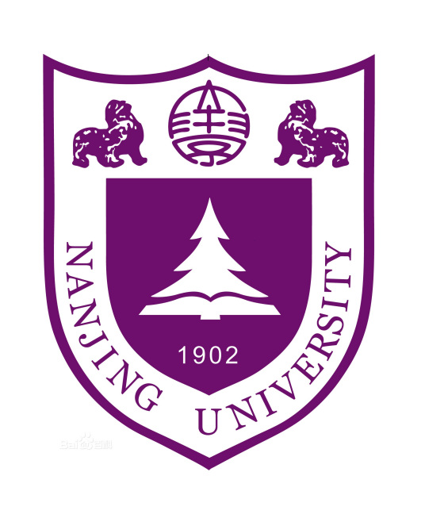
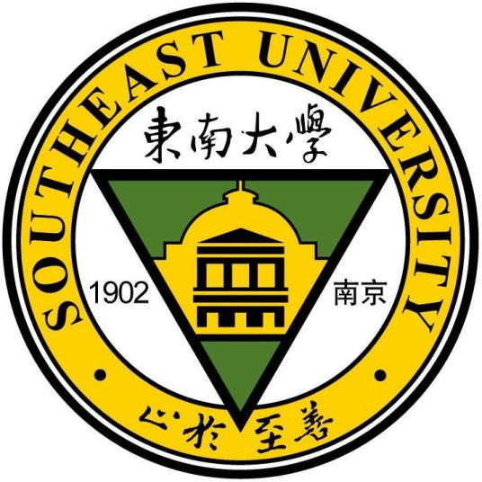
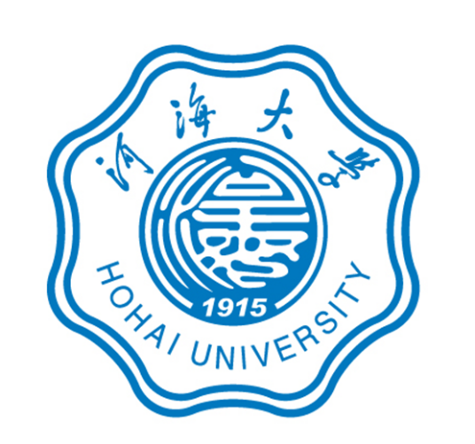
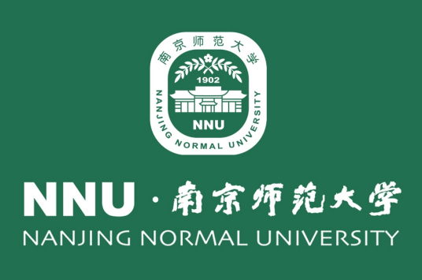

 南京大学（Nanjing University），简称“南大”，位于江苏省南京市，是中华人民共和国教育部直属、中央直管副部级建制的全国重点大学， 位列国家“双一流”、“985工程”、“211工程” 重点建设高校，入选“珠峰计划”、“强基计划”、“111计划”、“2011计划”，为九校联盟（C9）、中国大学校长联谊会、环太平洋大学联盟、21世纪学术联盟、全球大学高研院联盟、国际应用科技开发协作网、东亚研究型大学协会、亚洲校园、新工科教育国际联盟、中国高校行星科学联盟、长三角研究型大学联盟、学位授权自主审核单位成员，首批国家级双创示范基地。
学校肇始于1902年创建的三江师范学堂，此后历经两江师范学堂、南京高等师范学校、国立东南大学、国立中央大学等时期，1950年更名为南京大学。1952年，调整出部分院系后与创办于1888年的金陵大学文、理学院等合并，仍名南京大学。校址从四牌楼迁至鼓楼金陵大学原址。2006年，教育部和江苏省签订重点共建南京大学的协议。2011年，教育部和江苏省签署协议继续重点共建南京大学。

东南大学（Southeast University），简称“东大” ，本部位于南京 ，是中华人民共和国教育部直属全国重点大学，中央直管副部级建制，是国家“双一流”、“985工程”、“211工程”重点建设高校 ，入选“珠峰计划” 、“强基计划”、“2011计划”、“111计划”、卓越工程师教育培养计划、卓越医生教育培养计划、学位授权自主审核单位 、首批未来技术学院建设高校 ，为“建筑老八校” 、卓越大学联盟 、长三角可持续发展大学联盟 、中英大学工程教育与研究联盟 、中俄工科大学联盟 、碳中和世界大学联盟 成员。
东南大学肇始于1902年创建的三江师范学堂，后历经两江师范学堂、南京高等师范学校、国立东南大学、国立中央大学等重要历史时期。1952年全国高校院系调整，学校文理等科迁出，以原国立中央大学工学院为主体，先后并入复旦大学、交通大学、浙江大学、金陵大学等校的有关系科，在国立中央大学本部原址（今东南大学四牌楼校区 ）建立南京工学院，1988年恢复东南大学校名。2000年与原南京铁道医学院、南京交通高等专科学校、南京地质学校合并组建新的东南大学。

河海大学（Hohai University），简称“河海（HHU）”，是以水利为特色，工科为优势，经、管、文、理、法、艺、教、农等多学科协调发展的中华人民共和国教育部直属全国重点大学，教育部、水利部、国家海洋局与江苏省人民政府共建高校，是国家“双一流”建设高校，国家“211工程”重点建设、“985工程优势学科创新平台”建设以及设立研究生院的高校，全国首批具有博士、硕士、学士三级学位授予权的单位 ，入选国家“111计划”、“卓越工程师教育培养计划”、国家级大学生创新创业训练计划、国家建设高水平大学公派研究生项目、国家级新工科研究与实践项目、中国政府奖学金来华留学生接收院校、国家大学生文化素质教育基地、全国高校实践育人创新创业基地。
河海大学的前身可以追溯到1915年张謇创建于南京的“河海工程专门学校”，是中国首所培养水利人才的高等学府。1924年与国立东南大学工科合并成立河海工科大学，1927年并入国立第四中山大学，后更名为国立中央大学、南京大学。1952年南京大学水利系、交通大学水利系、同济大学土木系水利组、浙江大学土木系水利组以及华东水利专科学校合并成立“华东水利学院”。1960年被中共中央认定为全国重点大学。1985年恢复传统校名“河海大学”。

南京师范大学（Nanjing Normal University），简称“南师”，坐落于六朝古都江苏省南京市，是教育部与江苏省人民政府共建的国家“双一流”建设高校， [58] 国家“211工程”首批重点建设高校，江苏高水平大学建设高校；入选国家“111计划”、卓越教师培养计划、卓越法律人才教育培养计划、国家建设高水平大学公派研究生项目、中国政府奖学金来华留学生接收院校、国家大学生文化素质教育基地、教育部来华留学示范基地，是中国高等师范教育的发祥地之一。 [1-3]
学校主源可追溯到1902年创办三江师范学堂，历经两江师范学堂、南京高等师范学校、国立东南大学、国立第四中山大学、江苏大学、国立中央大学、国立南京大学等时期；另一源头为1888年创办的汇文书院，后发展为私立金陵大学，1951年与金陵女子文理学院（原金陵女子大学）合并，成立公立金陵大学。1952年全国高校院系调整，以南京大学、金陵大学等有关院系为基础，在原金陵女子大学校址组建南京师范学院。1984年更名为南京师范大学。2000年南京动力高等专科学校并入。